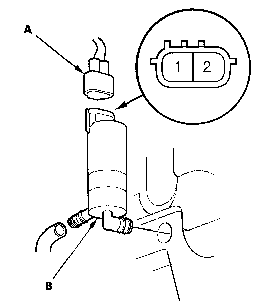

Headlight Washer Motor Test/Replacement
Headlight Washer Motor Test/ReplacementCanada models
1. Remove the light inner fender.

2. Disconnect the 2P connector (A) from the washer motor (B).
3. Test the motor by connecting battery power to the headlight washer motor 2P connector No. 1 terminal and ground to the No. 2 terminal. The motor should run.
- If the motor does not run or fails to run smoothly, replace it.
- If the motor runs smoothly, but little or no washer fluid is pumped, check for a disconnected or blocked washer hose, or a clogged washer motor outlet.
4. Install the washer motor in the reverse order of removal.